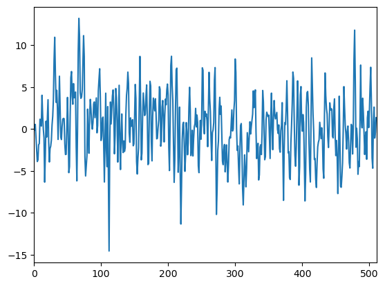
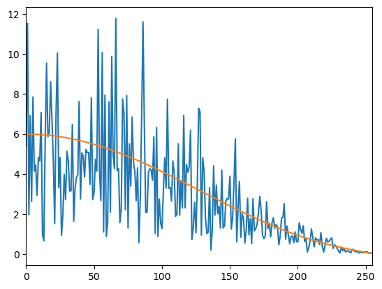

時間領域ディジタル信号 $f[i]$ が与えられた時に、その信号が周期的な信号であるのか、それともただのノイズなのかは自己相関関数(autocorrelation function) $\textrm{R}[n]$ を使って判定できます。
ただし前提として $f[i]$ が(弱)定常過程であるとします。 そこでまずここでは定常過程について説明します。
定常過程とは $f[i]$ がある確率に従って出力されている時に、$f[i]$ の平均
\[ \textrm{E} \left ( f[i] \right ) \]が時刻 $i$ によらず定数になり、かつ $n$ を遅延時刻とした時に $f[i]$ と $f[i+n]$ の共分散
\[ Cov \left ( f[i], f[i+n] \right ) \]が時刻 $i$ によらず遅延時刻 $n$ のみで値が決まる信号列のことです。
なお共分散の性質より
\[ Cov \left ( f[i], f[i+n] \right ) = Cov \left ( f[i+n], f[i] \right ) \]
という等式が成り立ちます。
また定常過程の場合は時刻 $i$ が関係無くなるので
という等式も成り立ちます。
では具体的に定常過程となっている信号の例を示しましょう。
以下の図 1 は信号
を $i=0$ から $i=511$ まで 512 点出力したグラフで、いわゆる「移動平均(MA)モデル」と呼ばれるモデルです(図1,2のソースはこちら)。
ここで $e[i]$ は各時刻毎に独立な平均 0、分散 1 の正規乱数です。

一見するとただのノイズの様に見えますが、平均と共分散を計算すると
平均 : ※ 導出はこのページの下の方を参照
\[ \textrm{E}(f[i]) = 0 \]共分散 : ※ 導出はこのページの下の方を参照
\[ Cov \left ( f[i], f[i+0] \right ) = 14 \] \[ Cov \left ( f[i], f[i+1] \right ) = 9 \] \[ Cov \left ( f[i], f[i+2] \right ) = 2 \] \[ Cov \left ( f[i], f[i+n] \right ) = 0 \ , \ (n \geq 3) \]の様に平均が定数になり、共分散も $i$ が含まれておらず $n$ だけで値が決まっているので、$f[i]$ は定常過程であることが分かります。
参考までにこの $f[i]$ の振幅スペクトルは以下の図2の様になります。
なかなか特徴的なスペクトルになっていますので、確かにノイズでは無いことが分かります。
※ 橙色の線は理論的なスペクトル包絡線
もう少し複雑な例として図3を見て下さい。
図3の信号も図1と同様に移動平均(MA)モデルから生成した信号です(図3,4のソースはこちら)。
一見すると平均が上下していて定常過程でないような印象を受けますが、もちろんこの信号も定常過程になっています。
参考までに図3の信号の振幅スペクトルを図4に示します。
※ 橙色の線は理論的なスペクトル包絡線
ここで $e[i]$ は各時刻毎に独立な平均 0、分散 1 の正規乱数とする。
平均は以下の様にして求められる。
\begin{align*} \textrm{E}(f[i]) &= \textrm{E}( e[i] + 3 \cdot e[i-1] + 2 \cdot e[i-2] ) \\ &= \textrm{E} ( e[i] ) + 3 \cdot \textrm{E} ( e[i-1] ) + 2 \cdot \textrm{E} ( e[i-2] ) \\ &= 0 \end{align*}共分散は以下の様にして求められる。
\begin{align*} Cov \left ( f[i], f[i+n] \right ) &= \textrm{E} \left \{ \left( f[i] - \textrm{E}(f[i]) \right ) \cdot \left( f[i+n] - \textrm{E}(f[i+n]) \right ) \right \} \\ &= \textrm{E} \left \{ \left( e[i] + 3 \cdot e[i-1] + 2 \cdot e[i-2] \right ) \cdot \left( e[i+n] + 3 \cdot e[i+n-1] + 2 \cdot e[i+n-2] \right ) \right \} \\ &= 1 \cdot \textrm{E} \left( e[i] \cdot e[i+n] ) \right ) + 3 \cdot \textrm{E} \left ( e[i-1] \cdot e[i+n] \right ) + 2 \cdot \textrm{E} \left ( e[i-2] \cdot e[i+n] \right ) \\ &+ 3 \cdot \textrm{E} \left( e[i] \cdot e[i+n-1] ) \right ) + 9 \cdot \textrm{E} \left ( e[i-1] \cdot e[i+n-1] \right ) + 6 \cdot \textrm{E} \left ( e[i-2] \cdot e[i+n-1] \right ) \\ &+ 2 \cdot \textrm{E} \left( e[i] \cdot e[i+n-2] ) \right ) + 6 \cdot \textrm{E} \left ( e[i-1] \cdot e[i+n-2] \right ) + 4 \cdot \textrm{E} \left ( e[i-2] \cdot e[i+n-2] \right ) \\ \end{align*}
$e[i]$ は時刻毎に独立なので $i \neq j$ の時 $ \textrm{E} \left ( e[i] \cdot e[j] \right ) = 0$
よって$n=0$ の時
$n=1$ の時
\begin{align*} Cov \left ( f[i], f[i+1] \right ) &= 1 \cdot \textrm{E} \left( e[i] \cdot e[i+1] ) \right ) + 3 \cdot \textrm{E} \left ( e[i-1] \cdot e[i+1] \right ) + 2 \cdot \textrm{E} \left ( e[i-2] \cdot e[i+1] \right ) \\ &+ 3 \cdot \textrm{E} \left( e[i] \cdot e[i] ) \right ) + 9 \cdot \textrm{E} \left ( e[i-1] \cdot e[i] \right ) + 6 \cdot \textrm{E} \left ( e[i-2] \cdot e[i] \right ) \\ &+ 2 \cdot \textrm{E} \left( e[i] \cdot e[i-1] ) \right ) + 6 \cdot \textrm{E} \left ( e[i-1] \cdot e[i-1] \right ) + 4 \cdot \textrm{E} \left ( e[i-2] \cdot e[i-1] \right ) \\ &= 3 + 6 \\ &= 9 \end{align*}$n=2$ の時
\begin{align*} Cov \left ( f[i], f[i+2] \right ) &= 1 \cdot \textrm{E} \left( e[i] \cdot e[i+2] ) \right ) + 3 \cdot \textrm{E} \left ( e[i-1] \cdot e[i+2] \right ) + 2 \cdot \textrm{E} \left ( e[i-2] \cdot e[i+2] \right ) \\ &+ 3 \cdot \textrm{E} \left( e[i] \cdot e[i+1] ) \right ) + 9 \cdot \textrm{E} \left ( e[i-1] \cdot e[i+1] \right ) + 6 \cdot \textrm{E} \left ( e[i-2] \cdot e[i+1] \right ) \\ &+ 2 \cdot \textrm{E} \left( e[i] \cdot e[i] ) \right ) + 6 \cdot \textrm{E} \left ( e[i-1] \cdot e[i] \right ) + 4 \cdot \textrm{E} \left ( e[i-2] \cdot e[i] \right ) \\ &= 2 \end{align*}$n=3$ の時
\begin{align*} Cov \left ( f[i], f[i+3] \right ) &= 1 \cdot \textrm{E} \left( e[i] \cdot e[i+3] ) \right ) + 3 \cdot \textrm{E} \left ( e[i-1] \cdot e[i+3] \right ) + 2 \cdot \textrm{E} \left ( e[i-2] \cdot e[i+3] \right ) \\ &+ 3 \cdot \textrm{E} \left( e[i] \cdot e[i+2] ) \right ) + 9 \cdot \textrm{E} \left ( e[i-1] \cdot e[i+2] \right ) + 6 \cdot \textrm{E} \left ( e[i-2] \cdot e[i+2] \right ) \\ &+ 2 \cdot \textrm{E} \left( e[i] \cdot e[i+1] ) \right ) + 6 \cdot \textrm{E} \left ( e[i-1] \cdot e[i+1] \right ) + 4 \cdot \textrm{E} \left ( e[i-2] \cdot e[i+1] \right ) \\ &= 0 \end{align*}同様にして $n \geq 4$ の時も 0